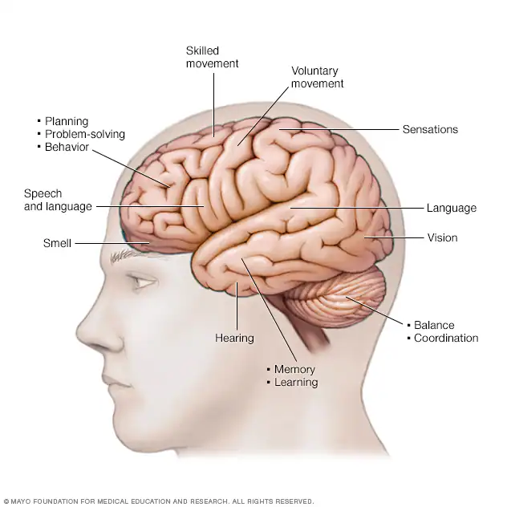
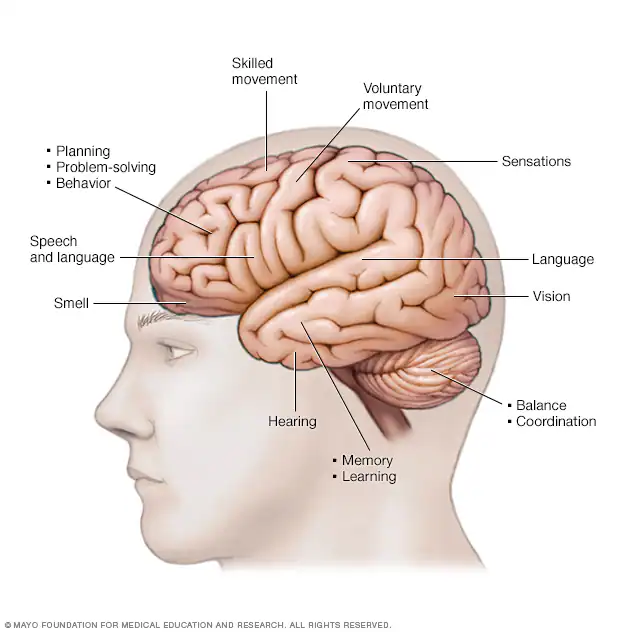

|
 |  |
Discover the complexities of the human brain and its role in behavior, cognition, and health.
Neuroscience is the scientific study of the nervous system, which includes the brain, spinal cord, and networks of sensory and motor neurons throughout the body. As a multidisciplinary field, it combines biology, psychology, chemistry, physics, and computer science to understand how the nervous system functions at various levels - from the molecular and cellular level to complex behaviors and cognition. Neuroscience seeks to answer fundamental questions about how we perceive the world, how we move, think, remember, and feel, and how disorders like Alzheimer's disease, depression, or Parkinson's disease affect these processes.
Advancements in neuroscience have been fueled by technological innovations such as brain imaging, electrophysiology, and computational modeling. These tools allow scientists to explore the structure and function of neurons, synapses, and brain circuits. By studying the nervous system in both healthy and diseased states, neuroscience not only deepens our understanding of human behavior and mental processes but also contributes to the development of medical treatments and technologies that improve quality of life.
|
 | |
Neuroplasticity is the brain’s ability to change and adapt in response to experience, learning, or injury. It enables neurons to form new connections, strengthen existing ones, and even reorganize entire brain regions to compensate for lost functions. This process is essential not only during early development but also throughout adulthood, supporting memory, skill development, and recovery from brain damage.
Mental health refers to a person’s emotional, psychological, and social well-being. It affects how individuals think, feel, and act, as well as how they handle stress, relate to others, and make choices. Good mental health is essential at every stage of life, from childhood through adulthood. When mental health is compromised, it can lead to conditions like anxiety, depression, and other psychological disorders, which can affect daily functioning and quality of life. Promoting mental well-being involves maintaining a healthy lifestyle, seeking help when needed, and reducing the stigma surrounding mental illness.